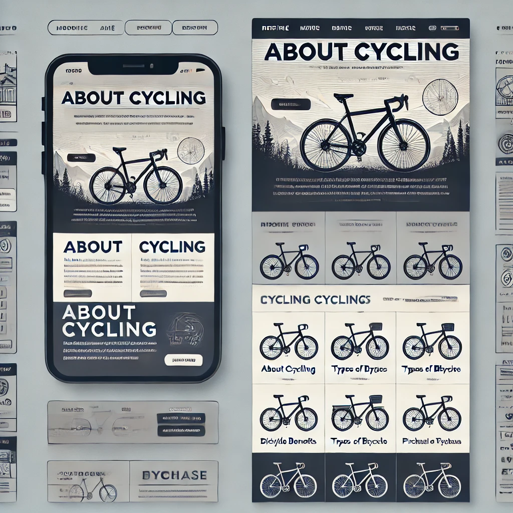

Site Purpose
The website provides information about choosing the best bicycle for various activities, whether for sport, hobby, or transportation.
Scenarios
1. What is the best bicycle for urban commuting?
2. Which bicycles are best for mountain trails?
Color Schema
The following colors are used throughout the site:
- --color1: Light Yellow (Background)
- --color2: Pastel Green (Sections)
- --color3: Medium Green (Buttons, Links)
- --color4: Deep Green (Headings)
- --color5: Dark Brown (Text, Navigation Background)
Typography
The website uses the Roboto font for all headings and text content. The font provides a clean and modern look suitable for the topic.
Wireframe
See the attached wireframe diagrams for mobile and desktop views.
